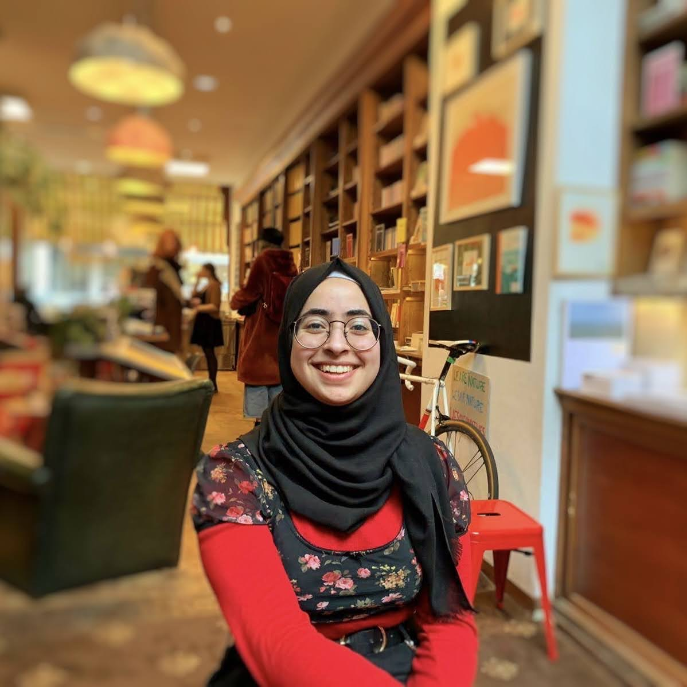

Muna El-Zeet
Data Analytics | Technical Project Management | Product Commercialisation | Strategic Business Insights
London, UK or Remote
mel-zeet@outlook.com

About Me
- Detail-oriented and customer-focused Data Analyst and Project Manager with a First Class BSc (Hons) in Medical Genetics and experience in data analysis, dashboard reporting and project management (software and platform)
- Skilled in creating dynamic dashboards, analysing large datasets, and delivering actionable recommendations to stakeholders. Experienced in leveraging data to drive insights, optimise performance, and support decision-making.
- Fluent in English and Arabic, bringing strong interpersonal skills and cultural awareness to support diverse teams and clients. Proactive, adaptable, and committed to professional growth in data-driven environments.
Education
BSc (Hons) Medical Genetics - First Class honours, Queen Mary University of London
Professional Experience
Illumina; Global leader in Genomics, Next-Generation Sequencing (NGS) and Array Technology.
Jan 2023 - Sep 2024
Technical Project Manager
Microsoft Project
PowerBI
Excel
Salesforce (SFDC)
MySQL
PostgreSQL
HTML
Gantt Chart
Atlassian suite
- Led multiple complex software, application and platform projects simultaneously to completion, facilitating the Market Entry and commercialisation of RUO (Research Use Only)/In Vitro Diagnostics (IVD) genetics products (Generating $1M+ Revenue)
- Designed and built dashboards to provide actionable, data-driven insights for target setting, KPI monitoring, and revenue tracking, integrating data from Salesforce (SFDC) and Tableau. Improved team efficiency by reducing reliance on email exchanges
- Identified workflow inefficiencies by analysing data on project timelines, budgets, deliverables and support cases. Suggested and implemented improvements to reduce bottlenecks
- Led project meetings for teams of 8+ people per project. Presented ongoing and upcoming projects to senior leadership in quarterly reviews. Tracked Project timelines, deliverables, budget, scope and risks - escalating when required. Utilised Lucidchart, Jira and Confluence for process mapping, risk tracking and project meeting notes
- cross-functional and cross-regional collaboration by maintaining communication channels between teams within the commercial operations team - Customer Care, Regulatory, Compliance, Training, Revenue Operations, Commercial Deals and Service and Support
- Gathered Voice of Customer (VoC) via Sales and Support teams and communicated feedback to product management and development teams for implementation in future product launches.
- Commercial Operations Social Team Lead - Led a team of 6 people to organise quarterly In-Person and Virtual social events for a global team of 70 people.
- Communicated complex technical information in terms appropriate for a non-technical audience.
- Provided regular project updates and communications to internal teams using Canva.
- Built a team web page using Sharepoint for easier access to documentation and feedback submission.
- Introduced and implemented project management tools such as Microsoft Project and Asana, streamlining the team’s project management processes.
Sep 2021 - Sep 2022
Technical Application Scientist
Salesforce (SFDC)
Tableau
Python
HTML
Excel
- Provided daily 1st line Technical Assistance for customers of Next Generation Sequencing (NGS) - troubleshooting hardware, software, and network issues to ensure timely resolution and minimal disruption to customer workflows in the labs both via phone and email in a fast-paced environment.
- Maintained documentation to a high standard, flagging any discrepancies in line with company QMS standards.
- Carried out In-house testing using the automation robot Opentrons 2 to maximise efficiency of the illumina DNA PCR-free library prep workflow. Developed technical training materials (user guides, FAQs and product documentation) for workflow automation.
- Customer-focused approach to troubleshooting, prioritised requests depending on urgency. Resolved problems which resulted in repeat business and high customer satisfaction.
- Collaborated with 2nd line support to ensure timely troubleshooting of issues with new products launched and reviewed technical product documentation prior to launch.
Self-Employed
Oct 2019 - Jan 2022
A-Level and GCSE Chemistry/Biology Tutor
Teaching
Writing
- Prepared and delivered biology and chemistry lessons for foundation university students and GCSE students, teaching AS and A-level chemistry and GCSE biology.
- Compiled teaching and learning resources to create a curriculum tailored for foundation university students studying medicine.
Bart’s Health NHS Trust
Sep 2020 - Aug 2021
COVID-19 Response Volunteer
Safeguarding
Clinical Setting
- Managed the reception desk, coordinating visitor appointments with wards, maintaining a clean and safe environment, and ensuring patient confidentiality in line with hospital policies
Queen Mary University of London Students’ Union
Sep 2018 - Mar 2019
Retail Assistant
- Provided customer service, handled transactions, restocked inventory, and maintained product displays to support the day-to-day operations of a university retail shop.
Additional Projects
Founder of Tatreez Revival;Traditional embroidery collective


Trained #IAmRemarkable Workshop Facilitator D&I Training - uplifting underrespresented groups to celebrate their achievements in the workplace
Find out more